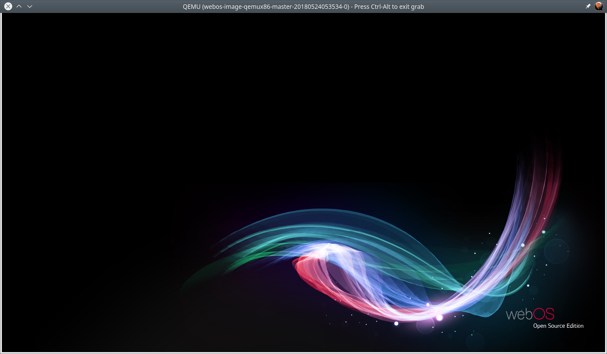
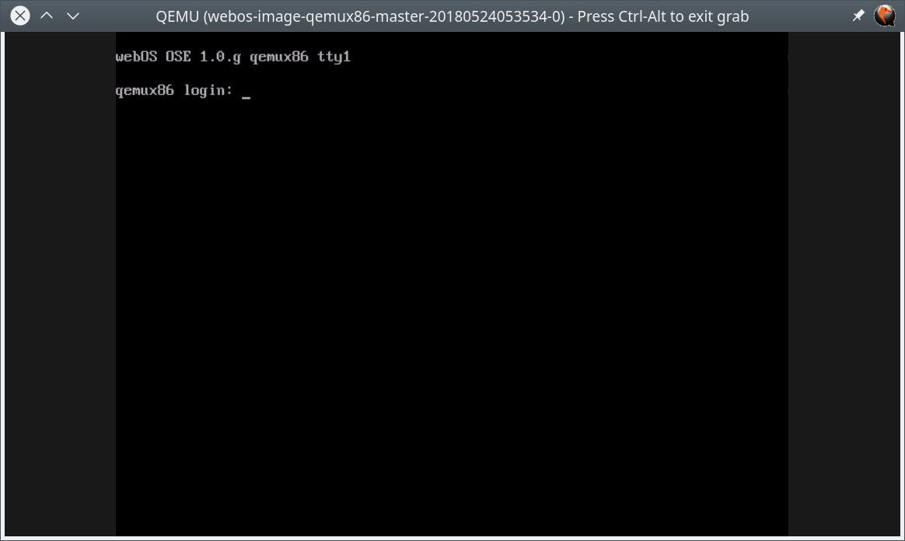
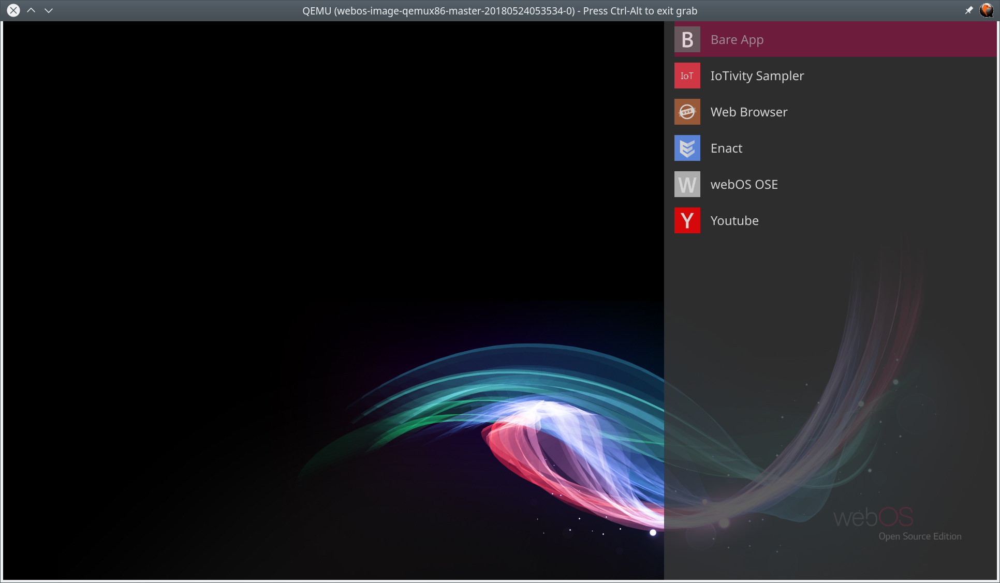
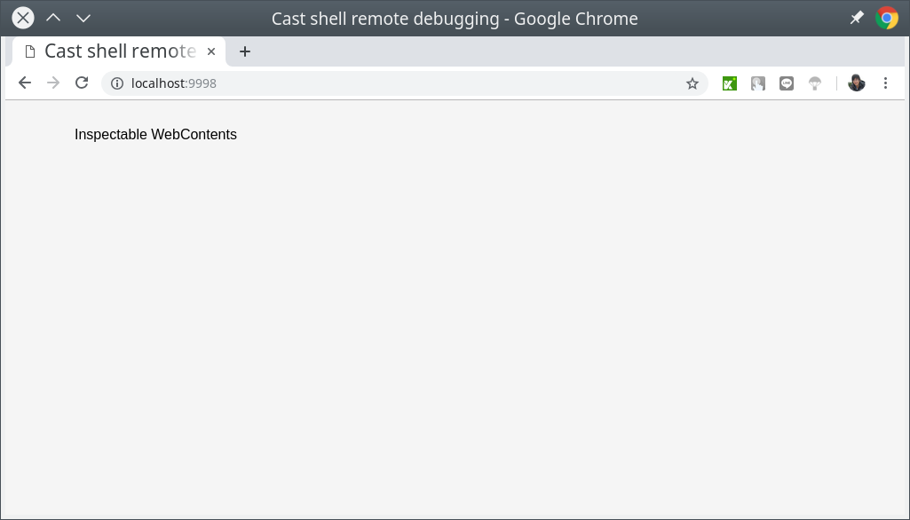

在 webOS OSE 研究筆記: 編譯 webOS OSE 到 Raspberry Pi 3 一文中我們題到了如何透過 webOS OSE 提供的基於 Yocto Project 的編譯系統，建立開機卡片讓你的 Raspberry Pi 3 執行 webOS OSE 系統。
而在這邊文章中，我們將改建立用於 webOS OSE 的模擬器環境，以便於手邊沒有 Raspberry Pi 3 可以用時候的開發。
下載
首先，我們先透過 git 取得基本的編譯環境
coldnew@gentoo ~ $ git clone https://github.com/webosose/build-webos.git
由於這個編譯環境是基於 Yocto Project 所建立，因此請先確定你的系統有滿足 Yocto Project 編譯需要的一些基本依賴，如果不確定並且你的系統是 Ubuntu 系列的話，你可以透果以下腳本來確認環境是否有滿足編譯需求。
coldnew@gentoo ~/build-webos $ sudo ./scripts/prerequisites.sh
設定
第一次進入到這個編譯環境，我們需要透過 webOS OSE 提供的 mcf 腳本來指
定目標機器。對於模擬器這個目邊，我們需要這樣下命令讓我們編譯環境設定成
編譯給 qemux86 使用
coldnew@gentoo ~/build-webos $ ./mcf qemux86
設定完成後，接下來就是進行編譯的工作了
編譯
首先我們先透過 source 命令設定好當前 shell 的環境
coldnew@gentoo ~/build-webos $ source oe-init-build-env
完成後，接下來就是選擇編譯目標，如果只是一般驗證用，可以選擇 webos-image
coldnew@gentoo ~/build-webos $ bitbake webos-image
如果是想要進行開發的話，推薦選擇 webos-image-devel 會比較好
coldnew@gentoo ~/build-webos $ bitbake webos-image-devel
接下來可以去睡一覺，因為編譯過程中會編譯到 Chromium，這會編譯非常久喔 ~
編譯完成後，會在 BUILD/deploy/image 下面出現我們想要的虛擬機映像檔: BUILD/deploy/images/qemux86/webos-image-qemux86.vmdk
執行虛擬機 (Ubuntu)
根據 QEMUx86 Emulator for Linux 一文，如果你是 Ubuntu 的使用者，你可以透過下載 webosose-emulator/prebuilt-emulator 這個 repo 裡面預先做好的 QEMU 執行檔，搭配 emulator 腳本來執行你的系統
(註: Gentoo Linux 使用者可以跳過這一步驟, 因為 emulator 腳本要修改才能在 Gentoo Linux 上執行)
我們首先先下載這個 repo
git clone https://github.com/webosose-emulator/prebuilt-emulator.git
仔細看一下，這整份 repo 基本上就是 QEMU 執行檔和執行腳本而已
coldnew@gentoo ~/prebuilt-emulator $ tree -L 2 . . <b> ├── bin <b> │ ├── pc-bios <b> │ ├── x86 <b> │ └── x86_64 <b> ├── emulator <g> ├── lib <b> │ ├── x86 <b> │ └── x86_64 <b> ├── README <g> ├── README-builds.md ├── README.md └── webos-config-sample.json <g> 7 directories, 5 files
我們好奇的是 webos-config-sample.json 這個檔案，裡面到底有什麼呢?
{ "description":"qemux86", "name":"webos-image-qemux86-master-20180524053534", "vmdk_file_path":"~/Downloads/webos-image-qemux86.vmdk", "hw.core":"1", "hw.ramSize":"1024", "hw.accel":"true", "hw.gl.accel":"true", "debug":"false", "portforwarding.SSH":"6622", "portforwarding.inspector":"9998" }
實際上這份檔案就是用來設定你要執行的模擬器，比如剛剛編譯好的 image 的路徑，或是你要給你的虛擬機多少 RAM 來使用。
我們複製這份檔案成 webos-config.json 並加入我們自己的修改後，就可以這樣執行虛擬機。
coldnew@gentoo ~/prebuilt-emulator $ ./emulator webos-config.json
然後如果沒意外的話，你就會看到一個 QEMU 的視窗跑起來了
執行虛擬機 (Gentoo)
由於 webosose-emulator/prebuilt-emulator 裡面提供的 emulator 腳本是針對 Ubuntu 而寫，因此對於 Gentoo Linux 的使用者而言，你可以使用我改好的 emulator-gentoo 腳本來替代它，使用方式一樣是
coldnew@gentoo ~/build-webos $ ./emulator-gentoo webos-config.json
在執行之前，請先確定你的系統有透過 Portage 來安裝以下套件，並且需要的 USE flag 皆有打開
| 套件名稱 | USE Flag |
|---|---|
| media-libs/virglrenderer | |
| app-emulation/qemu | sdl alsa opengl virgl |
| media-libs/mesa | gles2 |
截圖
如果一切順利，你應該會看到 QEMU 進入到 webOS OSE 的桌布

不順利的話，會看到進入到 QEMU, 但是卻沒有畫面顯示，這時後請確認一下你的 QEMU 使用的 backend 是否有問題

如果想要叫出內建的 App 的話，按下鍵盤上的 Super 按鍵 (或是 Windows 按鍵) 即可

使用 SSH 登入虛擬機
我們可以透過以下命令來 SSH 到你的虛擬機，注意到這邊的 Port: 6622 是設定在你的 webos-config.json 上
ssh -p 6622 -o StrictHostKeyChecking=no -o UserKnownHostsFile=/dev/null root@localhost
使用瀏覽器找問題
除了 SSH 外，我們也可以透過網頁瀏覽器連線到 Port: 9998 的位置，來執行 inspector，注意到這邊的 Port 一樣是設定在 webos-config.json 上的。

不過此時我還是不知道這功能要怎樣用，因此後續再來談 :)
Prebuilt image
如果你不想要自行編譯模擬器或是 Raspberry Pi3 的 image 的話，你可以到以下網址去下載已經編譯好的來玩玩看